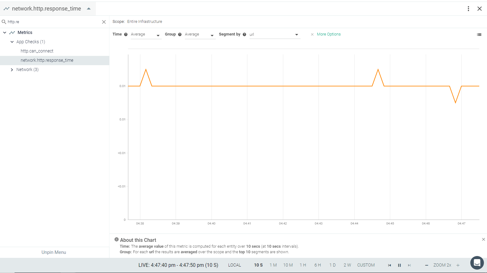

HTTP
The HTTP check monitors HTTP-based applications for URL availability.
This page describes the default configuration settings, how to edit the configuration to collect additional information, the metrics available for integration, and a sample result in the Sysdig Monitor UI.
HTTP Setup
You do not need to configure anything on HTTP-based applications for the Sysdig agent to connect.
Sysdig Agent Configuration
Review how to Edit dragent.yaml to Integrate or Modify Application Checks.
Default Configuration
No default entry is present in the dragent.default.yaml for the HTTP check. You need to add an entry in dragent.yaml as shown in following examples.
Warning
Never edit dragent.default.yaml directly; always edit only dragent.yaml.
Example 1
First you must identify the process pattern (comm:). It must match an actively running process for the HTTP check to work. Sysdig recommends the process be the one that is serving the URL being checked.
If the URL is is remote from the agent, the user should use a process that is always running, such as "systemd".
Confirm the "comm" value using the following command:
cat /proc/1/comm
Add the following entry to the dragent.yaml file and modify the 'name:''comm:' and 'url:' parameters as needed:
app_checks:
- name: EXAMPLE_WEBSITE
check_module: http_check
pattern:
comm: systemd
conf:
url: https://www.MYEXAMPLE.comExample 2
There are multiple configuration options available with the HTTP check. A full list is provided in the table following Example 2. These keys should be listed under the conf: section of the configuration in Example 1.
app_checks:
- name: EXAMPLE_WEBSITE
check_module: http_check
pattern:
comm: systemd
conf:
url: https://www.MYEXAMPLE.com
# timeout: 1
# method: get
# data:
# <KEY>: <VALUE>
# content_match: '<REGEX>''
# reverse_content_match: false
# username: <USERNAME>
# ntlm_domain: <DOMAIN>
# password: <PASSWORD>
# client_cert: /opt/client.crt
# client_key: /opt/client.key
# http_response_status_code: (1|2|3)\d\d
# include_content: false
# collect_response_time: true
# disable_ssl_validation: true
# ignore_ssl_warning: false
# ca_certs: /etc/ssl/certs/ca-certificates.crt
# check_certificate_expiration: true
# days_warning: <THRESHOLD_DAYS>
# check_hostname: true
# ssl_server_name: <HOSTNAME>
# headers:
# Host: alternative.host.example.com
# X-Auth-Token: <AUTH_TOKEN>
# skip_proxy: false
# allow_redirects: true
# include_default_headers: true
# tags:
# - <KEY_1>:<VALUE_1>
# - <KEY_2>:<VALUE_2>Key | Description |
|---|---|
| The URL to test. |
| The time in seconds to allow for a response. |
| The HTTP method. This setting defaults to GET, though many other HTTP methods are supported, including POST and PUT. |
| The data option is only available when using the POST method. Data should be included as key-value pairs and will be sent in the body of the request. |
| A string or Python regular expression. The HTTP check will search for this value in the response and will report as DOWN if the string or expression is not found. |
| When true, reverses the behavior of the |
| If your service uses basic authentication, you can provide the username and password here. |
| A string or Python regular expression for an HTTP status code. This check will report DOWN for any status code that does not match. This defaults to 1xx, 2xx and 3xx HTTP status codes. For example: |
| When set to |
| By default, the check will collect the response time (in seconds) as the metric |
| This setting will skip SSL certificate validation and is enabled by default. If you require SSL certificate validation, set this to |
| When SSL certificate validation is enabled (see setting above), this setting allows you to disable security warnings. |
| This setting allows you to override the default certificate path as specified in |
| When Note that this will cause the SSL certificate to be validated, regardless of the value of the |
| When |
| When |
| This parameter allows you to send additional headers with the request. e.g. |
| If set, the check will bypass proxy settings and attempt to reach the check URL directly. This defaults to |
| This setting allows the service check to follow HTTP redirects and defaults to |
| A list of arbitrary tags that will be associated with the check. |
Metrics Available
HTTP metrics concern response time and SSL certificate expiry information.
See HTTP Metrics.
Service Checks
http.can_connect:
Returns DOWN when any of the following occur:
the request to URL times out
the response code is
4xx/5xx,or it doesn’t match the pattern provided in thehttp_response_status_codethe response body does not contain the pattern in
content_matchreverse_content_matchistrueand the response body does contain the pattern incontent_matchURI contains
httpsanddisable_ssl_validationisfalse, and the SSL connection cannot be validatedOtherwise, returns UP.
Segmentation of the http.can_connect can be done by URL.
http.ssl_cert:
The check returns:
DOWN if the URL's certificate has already expired
WARNING if the URL's certificate expires in less than
days_warningdaysOtherwise, returns UP.
To disable this check, set check_certificate_expiration to false.
Result in the Monitor UI
|  |